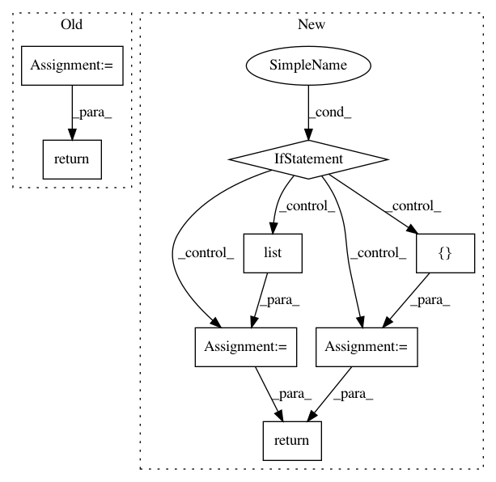

d15d9ad19021a8a3f26a86fbc6b71838ac37e7d1,pymc3/distributions/multivariate.py,MvNormal,random,#MvNormal#Any#Any#,107
Before Change
return stats.multivariate_normal.rvs(
mean, cov, None if size == mean.shape else size)
samples = generate_samples(_random,
mean=mu, cov=cov,
dist_shape=self.shape,
broadcast_shape=mu.shape,
size=size)
return samples
def logp(self, value):
mu = self.mu
tau = self.tau
After Change
else:
mu, chol_cov = draw_values([self.mu, self.chol_cov], point=point)
if size is None:
size = []
else:
try:
size = list(size)
except TypeError:
size = [size]
size.append(mu.shape[0])
standard_normal = np.random.standard_normal(size)
if self.has_tau:
return mu + scipy.linalg.solve_triangular(chol_tau, standard_normal.T, lower=True).T
return mu + np.dot(standard_normal, chol_cov)
def logp(self, value):
if self.has_tau:
In pattern: SUPERPATTERN
Frequency: 3
Non-data size: 8
Instances
Project Name: pymc-devs/pymc3
Commit Name: d15d9ad19021a8a3f26a86fbc6b71838ac37e7d1
Time: 2017-03-30
Author: jonathan.h.friedman@gmail.com
File Name: pymc3/distributions/multivariate.py
Class Name: MvNormal
Method Name: random
Project Name: keras-team/keras
Commit Name: 10d7e21efcf04bdb3438a809863a2fe728efe614
Time: 2017-03-12
Author: joshuarchin@gmail.com
File Name: keras/layers/recurrent.py
Class Name: Recurrent
Method Name: call
Project Name: reinforceio/tensorforce
Commit Name: 02fb71f730f6e600edbf27f58cea86209cb5dc55
Time: 2017-10-15
Author: aok25@cl.cam.ac.uk
File Name: tensorforce/core/networks/layer.py
Class Name: Linear
Method Name: tf_regularization_losses